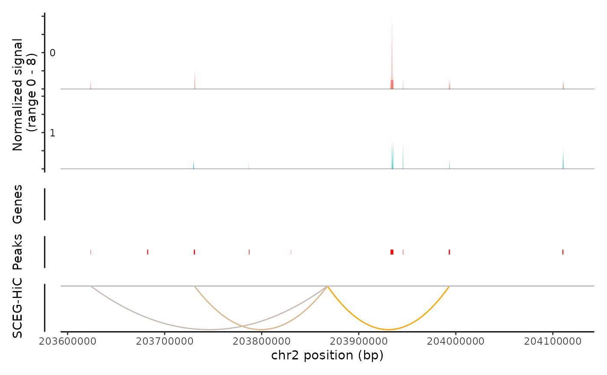

Plot links of SCEG-HiC on focused genes and Tn5 insertion frequency over a region
Source:R/visualization.R
coverPlot.RdPlot frequency of Tn5 insertion events for different groups of cells within given regions of the genome. And plot links for gene-peak predicted by SCEG-HiC within given regions of the genome.
Usage
coverPlot(
object,
focus_gene,
species,
genome,
assay = NULL,
upstream = 250000,
downstream = 250000,
HIC_Result = NULL,
HIC_cutoff = 0,
SCEG_HiC_Result = NULL,
SCEG_HiC_cutoff = 0,
correlation = NULL,
cells = NULL,
cellnames = NULL
)Arguments
- object
A Seurat object.
- focus_gene
The focused a gene.
- species
String indicating the name of the species.It can be either "Homo sapiens" or "Mus musculus".
- genome
String indicating the name of the genome assembly.It can be either "hg38", "hg19", "mm10",or "mm9".
- assay
Name of the assay to plot. If a list of assays is provided, data from each assay will be shown overlaid on each track. The first assay in the list will define the assay used for gene annotations, links, and peaks (if shown). The order of assays given defines the plotting order.
- upstream
Numeric specifying the window size (in base pairs) to pad around upstream of each TSS, to fetch gene's enhancers. Default is 250 kb (so 500 kb window is drawn around each TSS).
- downstream
Numeric specifying the window size (in base pairs) to pad around downstream of each TSS, to fetch gene's enhancers. Default is 250 kb (so 500 kb window is drawn around each TSS).
- HIC_Result
Hi-C result.
- HIC_cutoff
The threshold of gene-peak validated by Hi-C.Default is 0.
- SCEG_HiC_Result
SCEG-HiC result.
- SCEG_HiC_cutoff
The threshold of gene-peak predicted by SCEG-HiC.Default is 0.If
"aggregate"is TRUE ,we recommend the cutoff of 0.01. If"aggregate"is FALSE ,we recommend the cutoff of 0.001.- correlation
Correlation between elements result.
- cells
Which cells to plot. Default all cells.
- cellnames
Name of one or more metadata columns to group the cells. Default is the current cell identities.
Value
Returns a patchwork object.
Details
Additional information can be layered on the coverage plot by setting several different options in the CoveragePlot function. This includes showing:
gene annotations
peak positions
gene-peak results predicted by correlation
gene-peak results validated by Hi-C
Examples
data(multiomic_small)
SCEGdata <- process_data(multiomic_small, k_neigh = 5, max_overlap = 0.5)
#> Generating aggregated data
#> Aggregating cluster 0
#> Sample cells randomly.
#> have 11 samples
#> Aggregating cluster 1
#> Sample cells randomly.
#> have 11 samples
fpath <- system.file("extdata", package = "SCEGHiC")
gene <- c("TRABD2A", "GNLY", "MFSD6", "CTLA4", "LCLAT1", "NCK2", "GALM", "TMSB10", "ID2", "CXCR4")
weight <- calculateHiCWeights(SCEGdata, species = "Homo sapiens", genome = "hg38", focus_gene = gene, averHicPath = fpath)
#> Successfully obtained 10 TSS loci of genes from chromosome 2.
#> Calculate weight of TRABD2A
#> Calculate weight of GNLY
#> Calculate weight of MFSD6
#> Calculate weight of CXCR4
#> Calculate weight of CTLA4
#> Calculate weight of LCLAT1
#> Calculate weight of NCK2
#> Calculate weight of ID2
#> Calculate weight of GALM
#> Calculate weight of TMSB10
results_SCEGHiC <- Run_SCEG_HiC(SCEGdata, weight, focus_gene = gene)
#> The predicted genes are 10 in total.
#> Run model of TRABD2A
#> Run model of GNLY
#> Run model of MFSD6
#> Run model of CXCR4
#> Run model of CTLA4
#> Run model of LCLAT1
#> Run model of NCK2
#> Run model of ID2
#> Run model of GALM
#> Run model of TMSB10
fpath <- system.file("extdata", "multiomic_small_atac_fragments.tsv.gz", package = "SCEGHiC")
library(Signac)
frags <- CreateFragmentObject(path = fpath, cells = colnames(multiomic_small))
#> Computing hash
Fragments(multiomic_small) <- frags
coverPlot(multiomic_small, focus_gene = "CTLA4", species = "Homo sapiens", genome = "hg38", assay = "peaks", SCEG_HiC_Result = results_SCEGHiC, SCEG_HiC_cutoff = 0.01)
#> Warning: The 2 combined objects have no sequence levels in common. (Use
#> suppressWarnings() to suppress this warning.)
